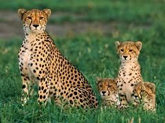

Se conoce como animal salvaje a aquél que vive en libertad, ya sea sobre la superficie terrestre, en el agua o volando. ... Los animales salvajes, por otra parte, viven en una libertad relativa ya que su ámbito suele limitarse a una cierta extensión territorial, protegida como reserva natural, parque nacional, etc.

Un animal salvaje es un animal que es, bueno, salvaje. Esto significa que no está domesticado y que es autosuficiente, por lo que no depende de las personas. Un animal salvaje busca su propia comida, refugio, agua y todo lo que le haga falta en un hábitat natural específico.Los animales silvestres son parte integral de las áreas que habitan y ayudan a mantener el equilibrio ecológico en esos mismos lugares... Al hacer parte de la cadena alimenticia, las especies silvestres son fuente de proteína para otras, incluso para la humana.
Entre los mas comunes lo son, el tigre, el elefante, el leon, la zebra entre otros. La selva es el habitat mas comun para este tipo de animal. Son los animales que el hombre ha habituado a vivir con los humanos.